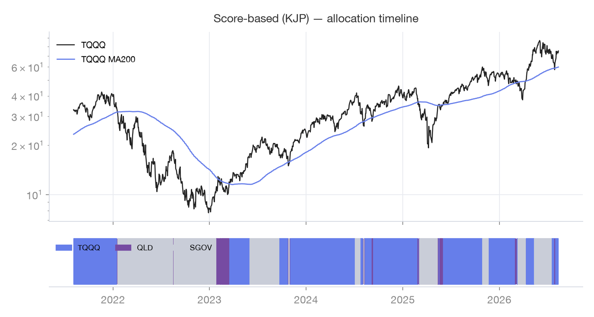
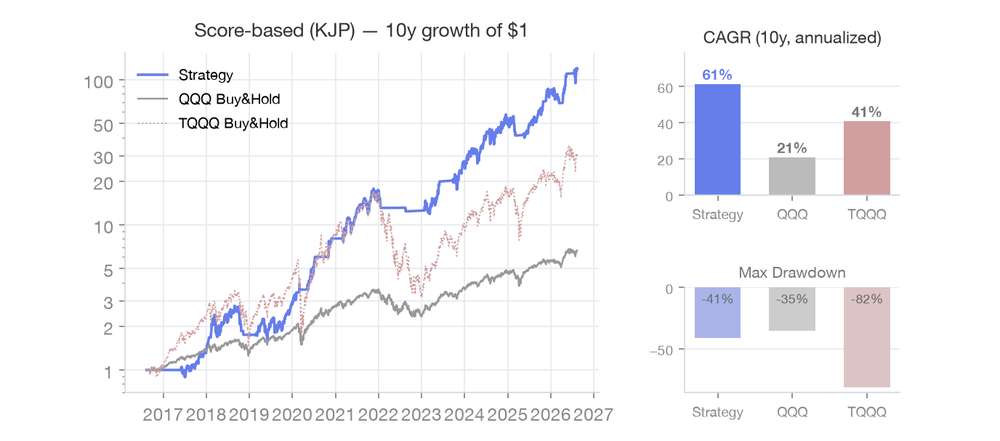

Score-based
Score-based (KJP)
Two trend signals summed into a score drive a 3-way TQQQ/QLD/SGOV allocation, with volatility and disparity gates as safety pins.
How it works
Score = [QQQ 3-day > 161-day: +1] + [TQQQ > 200-day: +1]. Allocate fully to TQQQ at 2 points, QLD at 1,
SGOV at 0. Two safety pins override the score: ① if TQQQ’s 20-day volatility is ≥ 6.2, go fully to
SGOV; ② if TQQQ stretches to ≥ 151% of its 200-day SMA, sell as overheated and only re-enter after it
cools to ≤ 118% (“cash never chases”). The app uses the improved parameters, not the original
draft’s.
Signal & traded assets
| Signal (chart) | QQQ 3/161 + TQQQ 200-day (score) · TQQQ 20-day volatility & disparity (gates) |
|---|
| Traded asset | TQQQ / QLD / SGOV three-way by score |
|---|
| Parked after sell | SGOV (short-term treasuries) |
|---|
Rules
| Score | [QQQ 3 > 161 : +1] + [TQQQ > 200-day : +1] |
|---|
| Allocation | 2 pts = TQQQ / 1 pt = QLD / 0 pts = SGOV (fully) |
|---|
| Volatility gate | TQQQ 20-day volatility ≥ 6.2 → all SGOV |
|---|
| Disparity gate | TQQQ ≥ 151% of its 200-day SMA → sell; re-enter only ≤ 118% |
|---|
Charts on real data

Last 5 years · green shading = holding periods

Last 10 years · growth of $1 (no taxes/fees)
FAQ
- Why QLD at 1 point?
- When the two signals disagree, halving the leverage keeps exposure without betting fully on 3x.
- The original post differs?
- The draft used a QQQ 2% volatility gate and had no disparity gate. The app uses the improved values — this page always follows the latest app implementation.
- What does volatility 6.2 mean?
- It is the 20-day standard deviation of TQQQ daily returns in percent — roughly 100% annualized. At that level trend signals lose reliability, so the strategy goes fully to SGOV regardless of score.
- Why the disparity gate?
- The trend score does not know how stretched the market is. Above 151% of the 200-day SMA it takes profit as overheated, and re-enters only after cooling to 118% — "cash never chases."
Sources
Backtest charts on this page reproduce the app’s rules on Yahoo Finance daily data (last 10 years,
adjusted closes) for reference only. Taxes, fees and slippage are not modeled, and past performance does not
guarantee future results. Rule descriptions and live signals always follow the app’s latest implementation.
Nothing here is investment advice; decisions and responsibility remain yours.
Enable this strategy in the app → Settings · Strategy